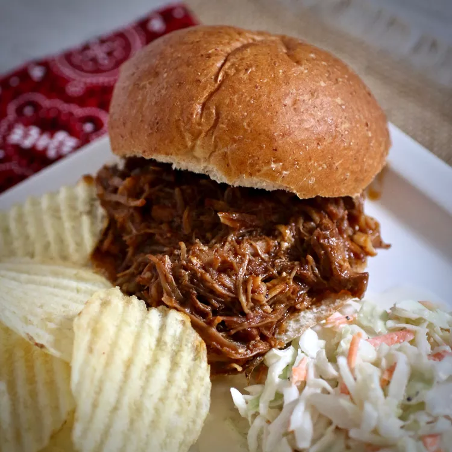

Instand Pot Pulled Pork Sandich

Picture of Pulled Pork Sandwich
Description:
Cook BBQ pulled pork in the Instant Pot, then shred it and load it onto Hawaiian rolls for a melt-in-your-mouth sandwich experience. This family-favorite recipe is easy and hassle-free.
Ingredients:
- 1 tablespoon smoked paprika
- 1 1/2 teapsons firmly packed light brown sugar
- 1/2 teaspoon ground black pepper
- 2lbs boneless por loin roast, cut into 1 inch cubes
- 1 tablespoon olive oil
- 8 Hawaiian bread rolls
Instructions:
- Step 1: Whisk paprika, brown sugar, garlic powder, salt, and pepper together in a large glass or ceramic bowl. Add pork and toss to evenly coat. Cover the bowl with plastic wrap and marinate in the refrigerator for 30 minutes.
- Step 2: Turn on a multi-functional pressure cooker (such as Instant Pot), add oil, and select the Sauté function. Cook pork in batches until browned, 5 to 7 minutes.
- Step 3: Return all pork to the pot; pour in barbecue sauce and water. Close and lock the lid; select the Manual function and set the timer for 60 minutes. Allow 10 to 15 minutes for pressure to build.
- Step 4: Release pressure using the natural-release method according to the manufacturer's instructions, 10 to 40 minutes. Unlock and remove the lid; transfer pork to a separate plate.